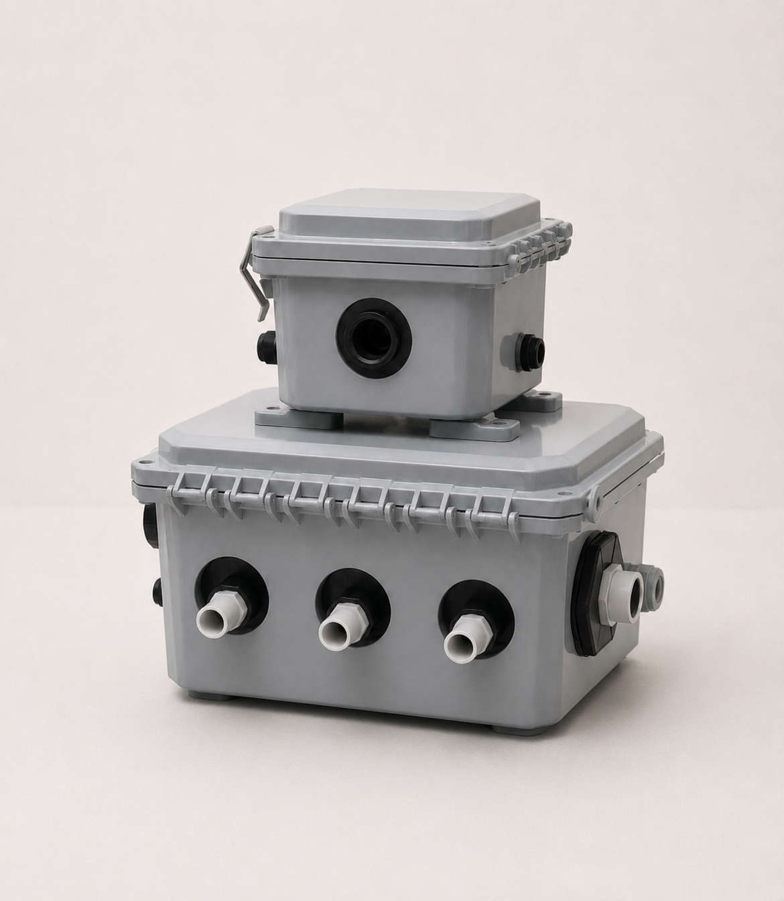
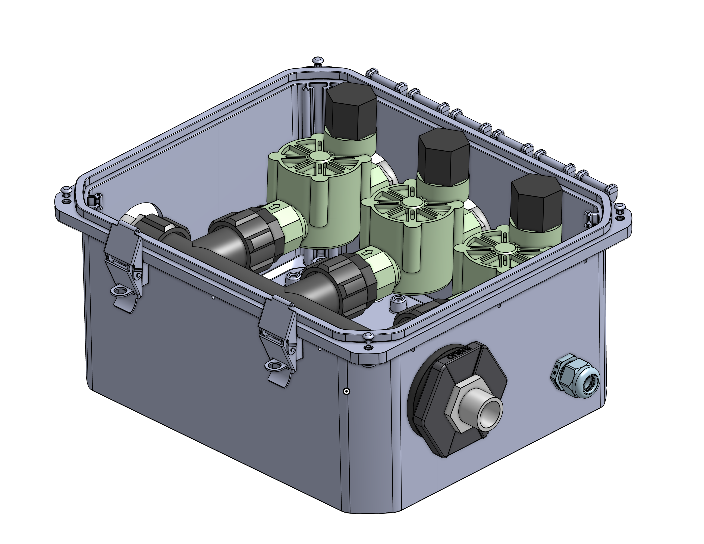
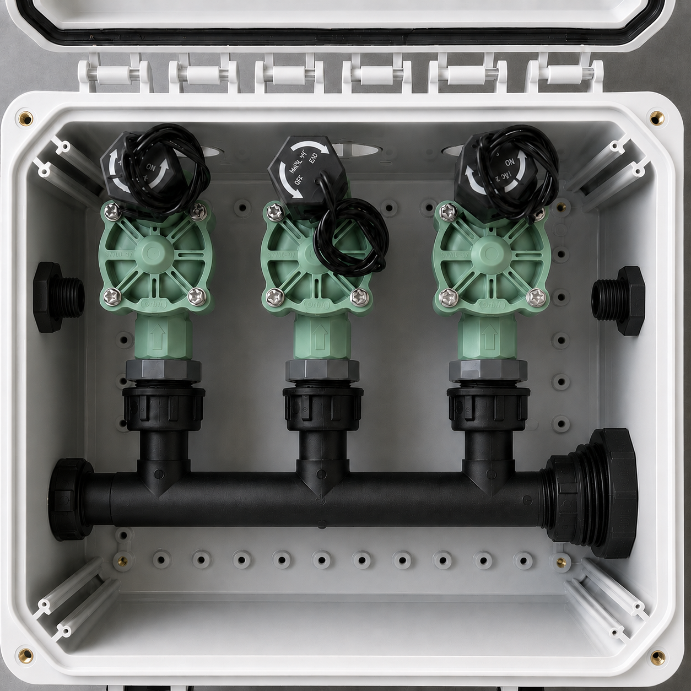
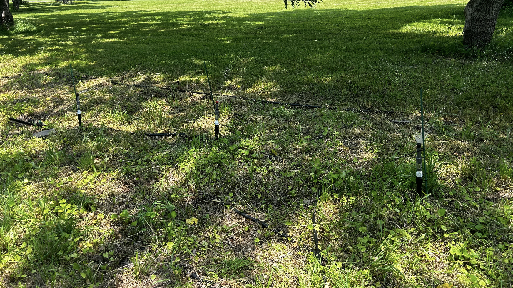

BOM Development
Created EBOMs and MBOMs to connect design intent with ordered parts and assembly needs.
Product Design & Manufacturing
A pair of outdoor manifold concepts for controlled rooftop deicing. The systems route deicing fluid through wired actuated valves, giving the product zone control without making the installed hardware overly complex.

The goal was to turn a simple deicing-fluid delivery system into a more controllable product architecture. Instead of treating the roof as one area, the manifold design lets selected sections receive flow through individually actuated valves.
I worked on both the three-valve and single-valve versions, keeping the designs similar enough to share manufacturing logic while supporting different installation needs.


Each manifold uses an outdoor enclosure, fluid fittings, valve hardware, and a wired connection to a central control box. The three-valve model supports separate zones, while the single-valve model provides a simpler controlled branch.
The design work centered on packaging, serviceability, fluid routing, and keeping the two models close enough that manufacturing documentation could stay consistent.
Beyond the physical layouts, I built the documentation and production tools needed to make the concepts easier to assemble, quote, and track.
Created EBOMs and MBOMs to connect design intent with ordered parts and assembly needs.
Wrote SOPs for manufacturing so builds could follow a repeatable sequence.
Developed kit tools that estimated product weight and tracked inventory for build planning.
Valve testing focused on cycling performance to check repeated actuation over time. The goal was to understand whether the selected valve approach could support multi-season outdoor use without adding unnecessary complexity.
I also tested sprayer brands, sprayer types, and tubing options to find a compatible setup with the right throw range and coverage across multiple arc angles. The final comparison used 40 trials across 5 days.

This project sat between engineering design and product readiness. The technical work was not only choosing valves and routing fluid, but also making sure the result could be built, tested, documented, and supported as a real product.